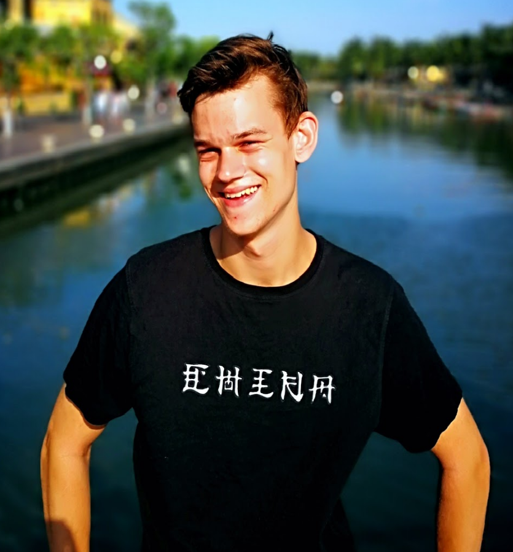

CV

Jeg hedder Rasmus Smedegaard Andersen, jeg er 22 år gammel, og er i øjeblikket bosat på Nørrebro. Jeg startede med at studere multimediedesign for at lære at udfolde min kreativitet grafisk. Min nuværende ambition er at studere videre på top-up-uddannelsen: Digital konceptudvikling.
I min fritid holder jeg af at male, spille fodbold og gå lange ture i byen samt i naturskønne omgivelser.